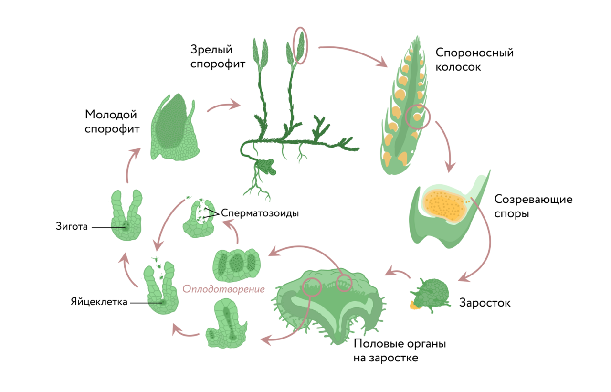

Плауновидные — отдел высших споровых растений, насчитывающий около 1
300 видов. В Беларуси встречаются 25 видов, самый распространённый вид
— плаун булавовидный.
Хвощи — древняя группа споровых сосудистых растений, в настоящее время
представленная всего 32 видами из единственного рода Хвощ. Обычно эту
немногочисленную группу выделяют в отдел Хвощевидные, но в некоторых
источниках их относят к классу Хвощовые отдела Папоротниковидные.
Наука, изучающая плауны, папоротники и хвощи, называется птеридологией
(от др.-греч. pteris [птэ́рис] — «папоротник»).
Представители современных плауновидных — многолетние травянистые растения,
обычно вечнозелёные. Побеги стелющиеся, дихотомически (от др.-греч. dicha
[ди́ха] — «надвое» и tome [то́мэ] — «сечение») ветвящиеся, укореняются в
почве с помощью придаточных корней. Листочки мелкие, простые, с одной
центральной жилкой, обычно располагаются на стебле по спирали. На
верхушках побегов развиваются спороносные колоски. В стеблях хорошо
развита проводящая ткань, водопроводящими элементами являются трахеиды.
Размножение плаунов
Размножение Плауновидные размножаются бесполым и половым путём. Бесполое
размножение осуществляется спорами, а также вегетативным путём —
укоренением побегов и частями стебля. Половое размножение происходит с
участием половых клеток (гамет). Для передвижения сперматозоидов к
яйцеклеткам необходима вода. Особенности жизненного цикла На концах
дихотомически ветвящихся побегов плауна образуются прямостоячие
спороносные колоски. Они образованы видоизменёнными чешуевидными
листочками, на которых формируются споры. Созревшие споры высыпаются, из
них развиваются небольшие, диаметром 2–3 мм, пластиночки — за́ростки. Это
половое поколение (гаметофиты). На заростке формируются органы полового
размножения, в них образуются половые клетки — яйцеклетки и сперматозоиды.
После оплодотворения, которое возможно только в водной среде, из зиготы
прямо на заростке начинает развиваться спорофит (бесполое поколение) —
будущее растение плауна. Таким образом, в жизненном цикле плаунов
преобладает бесполое поколение (спорофит).

Значение плаунов
Расцвет этой группы растений пришёлся на каменноугольный период, в
настоящее время видовое и численное обилие плауновидных невелико. Многие
виды являются редкими. Так, из 25 видов плауновидных, встречающихся на
территории нашей страны, в Красную книгу России занесены вида. Некоторые
виды, например плаун-баранец, ядовиты для человека. Некоторые виды плаунов
ранее использовались человеком как лекарственные и красильные растения, но
в настоящее время практически утратили это значение. Несколько видов
плауновидных применяются в народной медицине и в качестве декоративных
почвопокровных растений. Древние гигантские плауновидные принимали участие
в образовании каменного угля. Сегодня каменный уголь — один из видов
топлива и сырья для химической промышленности.
Значение хвощей
Образование каменного угля
Вымершие хвощи принимали участие в образовании каменного угля.
Звено пищевых цепей
Для лосей, оленей, кабанов, ондатр, водоплавающих птиц отдельные виды
хвощевидных являются кормовым объектом. Но большинство видов либо
ядовиты для животных, либо малосъедобны из-за большого количества
кремнезёма в стеблях.
Ядовитые виды
Многие виды хвощей ядовиты.
Лекарственное растение
В официальной и народной медицине вегетативные побеги хвоща полевого
используются в качестве кровоостанавливающего и мочегонного средства.
Пищевое растение
Молодые спороносные побеги и клубни хвоща полевого в некоторых
местностях употребляют в пищу как весеннюю витаминную зелень.
Шлифовальный материал
Стебли используют для шлифовки изделий из металла и дерева.
Сорняк
Хвощ полевой — злостный сорняк.
Индикаторы кислых почв
Хвощи являются индикаторами кислых почв. В агроценозах, где встречаются
эти сорняки, необходимо проводить раскисление (известкование) почвы.